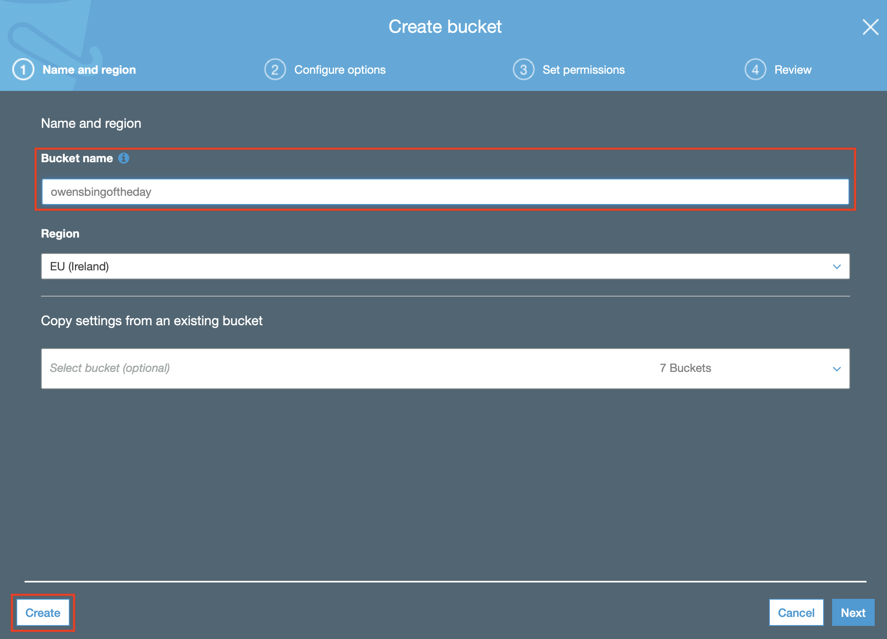
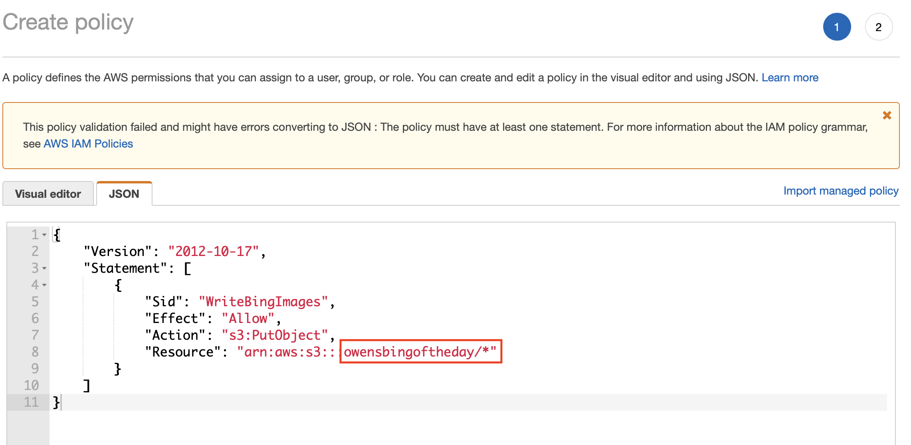
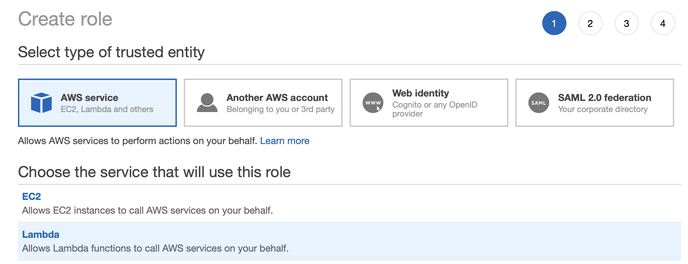
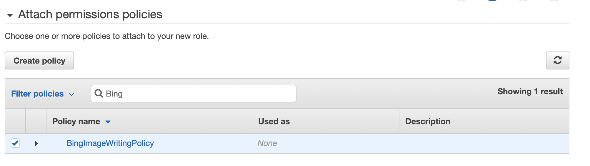
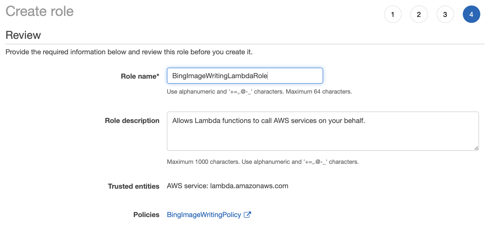
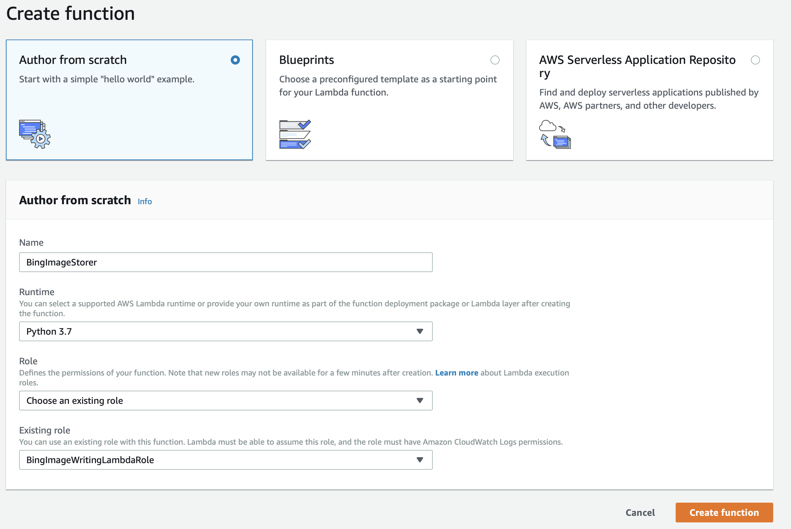
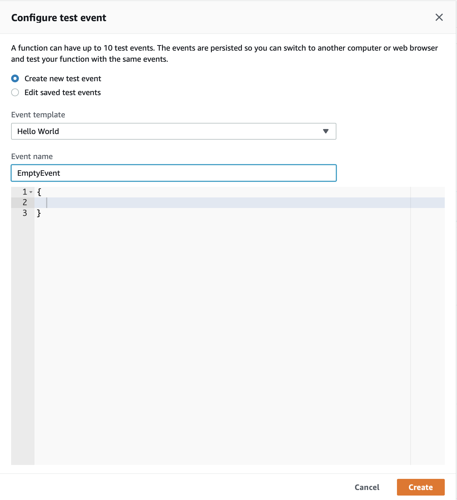
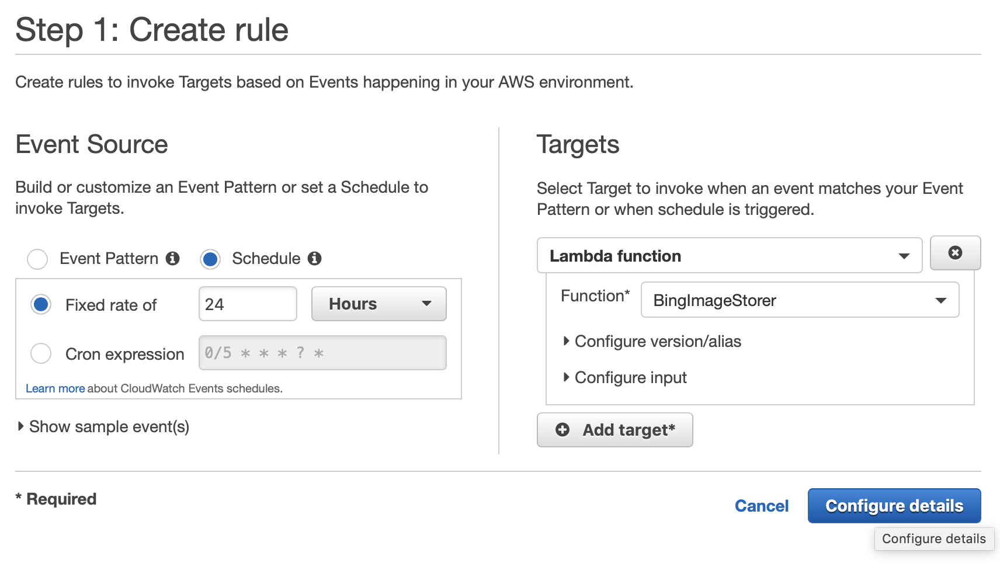

Back in 2014 I wrote an article about borrowing the bing wallpaper to use on my Macbook. Not long after that, I found that I was missing the odd “Bing of the Day” so I decided to run it in the cloud.
This post cover the steps of how that is achieved so you can “borrow” the Bing of the Day into S3.
Prerequisite
You will need an Amazon Web Services account. The Lambda function that runs this will fit within your free tier and it will take some time before the images dent your S3 free tier.
I’m not going to cover creating an account, but if you don’t have one then you can go to the AWS account creation page to get started.
Steps
Creating the S3 Bucket for your images
First thing you’re going to need is somewhere to store the images. I’m going to create a new bucket in S3 called owensbingoftheday. As per S3 requirements, you’re going to need to come up with your own unique bucket name.
In the AWS management console, go to the S3 service and create the new bucket, the create page should look like this;

Creating the Lambda Role
The next thing you’re going to need is an IAM Role which the Lambda function can execute as. First we will create the locked down policy the role is going to use to access the S3 bucket.
Creating the policy
In the IAM service of the AWS Management console, create a new policy and switch to the JSON tab then add the following JSON. You need to change the bucket name in the Resource section to match the name of the bucket you specified in the previous step.
{
"Version": "2012-10-17",
"Statement": [
{
"Sid": "WriteBingImages",
"Effect": "Allow",
"Action": "s3:PutObject",
"Resource": "arn:aws:s3:::owensbingoftheday/*"
}
]
}
The policy should look something like this; (you can ignore the error at the top of the screen shot)

Creating the role
Now that the policy has been created, we need the role that Lambda will execute as. This role will be created to trust Lambda. There is no need to explicity specify the Trust Policy for the role, we just select Lambda when creating the role.
Create a new role in the IAM service in AWS Management console. Ensure you select the service as Lambda to allow Lambda to assume the role.

Next, attach the policy we created earlier, you can filter to find it

Finally, save the policy with a unique name

At this point, all of the plumbing is done to create the new Lambda function. Go to the Lambda service in AWS Management console.
Creating Lambda Function
For this function we’re going to be starting a function from scratch. As the code to download the Bing of the day wallpaper is written in Python, we’ll be using that for the runtime.
Create a new function and the first page should look something like this;

Specify the new role that you’ve just created, it will allow the function to PUT our images into the specified bucket.
On the next screen, paste the code below into the code box and Save.
import boto3
import json
import os
import urllib3
from datetime import datetime
IMAGE_ARCHIVE_URL = 'http://www.bing.com/HPImageArchive.aspx?format=js&idx=0&n=1&mkt=en-US'
http = urllib3.PoolManager()
def get_image_details(payload):
image = payload.get('images')[0]
urlbase = image.get('urlbase')
name = image.get('fullstartdate')
return name, 'http://www.bing.com'+ urlbase + '_1920x1080.jpg'
def save_to_s3(name, path):
s3 = boto3.client('s3')
year = datetime.now().year
bucket_name = os.environ['BUCKET_NAME']
object_name = '%s/%s.jpg' % (year, name)
print ("uploading {}".format(object_name))
s3.upload_file(path, bucket_name, object_name)
def get_image(payload):
name, image_url = get_image_details(payload)
path = '/tmp/%s.jpg' % name
with open(path, 'wb') as f:
pic = http.request('GET', image_url)
f.write(pic.data)
return name, path
def lambda_handler(event, context):
req = http.request('GET', IMAGE_ARCHIVE_URL)
if req.status != 200:
print("Could not get the image archive data")
else:
payload = json.loads(req.data.decode('utf-8'))
name, path = get_image(image_url, path)
save_to_s3(name, path)
The lambda function can now be tested. We’ll need an event to send so using the drop down next to the Test button, create a new test event.
Fill out the details for an empty event so it looks like this;

Now, when you press the Test button, it will send the empty event to trigger the lambda function, all being well, you’ll find today’s image in the specified S3 bucket.
Scheduling the function
The intention was to move this from the laptop to run automatically within AWS. We now need to trigger this function to download once a day. To achieve this, we’re going to use a CloudWatch trigger with a schedule of 24 hours.

Give the rule and name and save it. Our lambda function will now be triggered every 24hours to download the Bing of the day.
Downloading to your machine
The last thing to do is the routine download of the latest files. To do this I use the aws cli and the sync function. this will download anything not already on my machine;
aws s3 sync s3://owensbingoftheday/2019 ~/Pictures/bing-wallpapers/2019